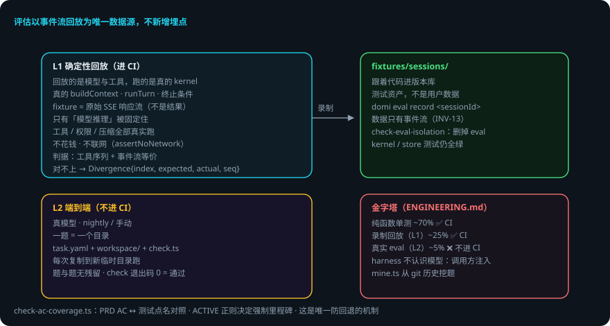

DOMI · DOCS
评估体系 L1 / L2
本页回答四个问题：怎么证明「没改坏」？怎么证明「真能干活」？测试金字塔什么样？回放怎么不花钱不联网？
packages/eval。 domi 的立场：评估以事件流回放为唯一数据源，不新增埋点；L1 是 CI 门禁，L2 只进 nightly / 手动。 贯穿例子：给登录接口加限流——改完权限逻辑，先跑 L1 回放证明没改坏，再跑 L2 验证真能干活。
先说结论
- L1 = 确定性回放（可进 CI）：回放的是模型与工具，跑的是真的 kernel——不花钱、不联网。
- L2 = 端到端（真模型，不进 CI）：一题 = 一个目录，每次复制到新临时目录跑，题与题没有残留。
- 判据：工具调用序列 + 事件流等价；对不上时给出
Divergence{index, expected, actual, seq}。 - fixture 存模型的原始 SSE 响应流，不是最终结果——只有「模型推理」被固定住，其它全真实跑。
- 删除
packages/eval后 kernel / store 测试仍全绿（INV-13 的守卫）。 - 测试金字塔：单测 ~70% / 回放 ~25% / 真实 eval ~5%。
用到的词
| 词 | 意思 |
|---|---|
| 回放 | 用录制的模型响应重跑真实 kernel。 |
| fixture | 录制的原始 SSE 响应流（测试资产）。 |
| L1 | 确定性回放，进 CI 门禁。 |
| L2 | 端到端真模型，只进 nightly / 手动。 |
| Divergence | 回放对不上的位置（第几次调用）。 |
1. 总体流程

2. L1：确定性回放（可进 CI）
eval/src/replay.ts：
- 回放的是模型与工具，跑的是真的 kernel：真的
buildContext、真的runTurn、真的终止条件、真的事件流——能抓到「改了 prompt 之后工具调用顺序变了」这类回归。 - 不花钱、不联网：回放期间任何出站调用都让测试失败（
assertNoNetwork）；fixture 存模型的原始 SSE 响应流，不是最终结果。 - 判据：工具调用序列 + 事件流等价；从第几次开始对不上给出
Divergence{index, expected, actual, seq}。 - 命令：
domi eval run（CI 里pnpm eval）；domi eval record <sessionId>录制（数据只有事件流）。 - 删除测试：删掉
packages/eval后 kernel / store 测试仍全绿（INV-13 的守卫方式，check-eval-isolation.ts）。
3. L2：端到端（真模型，不进 CI）
eval/src/l2.ts：L1 证明「没改坏」，L2 证明「真能干活」。
- 一题 = 一个目录：
task.yaml（提示与允许的能力）+workspace/（初始文件）+check.ts（判据，退出码 0 = 通过）。题在eval/l2/。 - 每次都复制到新的临时目录跑，题与题、次与次之间没有残留。
- harness 不认识模型：怎么跑一轮由调用方注入（CLI 用真实的 runtime，测试用替身）。
mine.ts：从 git 历史挖题（会写代码的评估源）。
4. 三层测试金字塔
| 层 | 占比 | 确定性 | 进 CI？ |
|---|---|---|---|
| 纯函数单测 | ~70% | 完全确定 | ✅ |
| 录制回放（ReplayProvider / L1） | ~25% | 确定 | ✅ |
| 真实 eval（L2） | ~5% | 非确定 | ❌（nightly / 手动，看趋势文件） |
5. 出错了怎么办：L1 回放对不上了
- 工具调用顺序变了。
Divergence{index, expected, actual, seq}——从第几次开始对不上。seq直接跳到轨迹面板对应节点，看哪一步变了。 - 回放期间有出站调用。
assertNoNetwork让测试失败。查是不是 fixture 依赖了网络（fixture 只存 SSE 流，不该有别的出站）。 - 改了 prompt 导致行为变化。这正是 L1 要抓的：改 prompt 是行为变更，先想清楚要不要改 fixture。
- L2 题挂了。check.ts 退出码非 0。在临时目录里重跑，看 workspace 状态——每次都是干净的。
- 录制数据缺失。
domi eval record的数据只有事件流；缺埋点说明事件没录全。
一张表看全部情况
| 情况 | domi 做什么 | 你要做什么 |
|---|---|---|
| 回放对不上 | 给 Divergence（index/seq） | 用 seq 跳轨迹节点排查 |
| 有出站调用 | assertNoNetwork 失败 | 查 fixture 依赖 |
| prompt 改了行为 | L1 抓住差异 | 决定改代码还是改 fixture |
| L2 题挂 | check.ts 非 0 | 临时目录重跑排查 |
| 录制缺数据 | — | 检查事件是否录全 |
6. 可靠性靠什么
- 事件流是唯一数据源：评估与轨迹同一份数据，不新增埋点。
- 只固定模型推理：工具、权限、压缩全部真实跑——回归抓得到。
- 无网保证：出站调用直接失败，CI 里不会偷偷联网。
- 隔离：L2 每次新临时目录，题与题无残留。
- 可删除：eval 包删掉其它测试仍绿，它不绑架系统。
- AC 对照：
check-ac-coverage.ts把 PRD AC ↔ 测试点名对照——唯一防回退机制。
已知限制
- L2 非确定：真实模型有波动，只进 nightly / 手动。
- fixture 需要维护：prompt / 行为变更后可能要重录。
- 回放只固定「模型推理」：其它环节仍受环境影响。
mine.ts挖题依赖 git 历史质量。
代码在哪里
| 主题 | 位置 |
|---|---|
| L1 回放 | packages/eval/src/replay.ts |
| L2 端到端 | packages/eval/src/l2.ts |
| 挖题 | packages/eval/src/mine.ts |
| 隔离守卫 | scripts/check-eval-isolation.ts |
| AC 对照 | scripts/check-ac-coverage.ts |
| L2 题 | eval/l2/ |